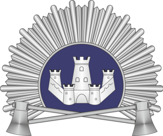
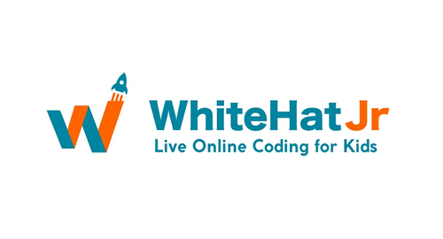
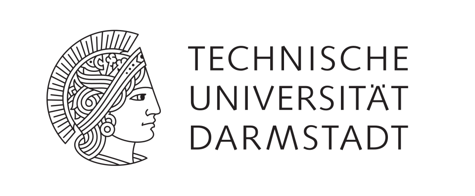
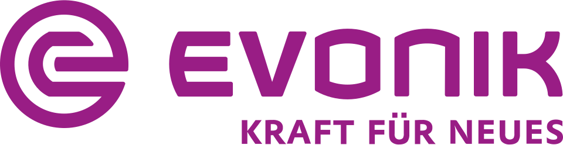

My Journey
Education
Work

Aug 2016
Aug 2020
Aug 2020
Education
B.Tech ECE
KSIT · VTU
Bangalore, India
Balancing a dense 4-year curriculum with NSS, IEEE, and interzone sports

Oct 2020
Apr 2021
Apr 2021
Work
Tutor
WhiteHat Jr
Mumbai, India
Adapting teaching methods to meet the needs of students with varying skill levels.
Apr 2021
Sep 2022
Sep 2022
Work
Systems Engineer
Infosys
Mysore, India
Maintaining and modernizing legacy mainframe systems while ensuring uninterrupted business operations.

Oct 2022
Aug 2026
Aug 2026
Education
M.Sc. ICE
TU Darmstadt
Darmstadt, Germany
Thriving in rigorous German academia while learning the language and culture

Jun 2024
Jul 2025
Jul 2025
Work
OT Security Intern
Evonik
Marl, Germany
Driving the digitalization of legacy industrial systems with limited visibility and outdated security controls